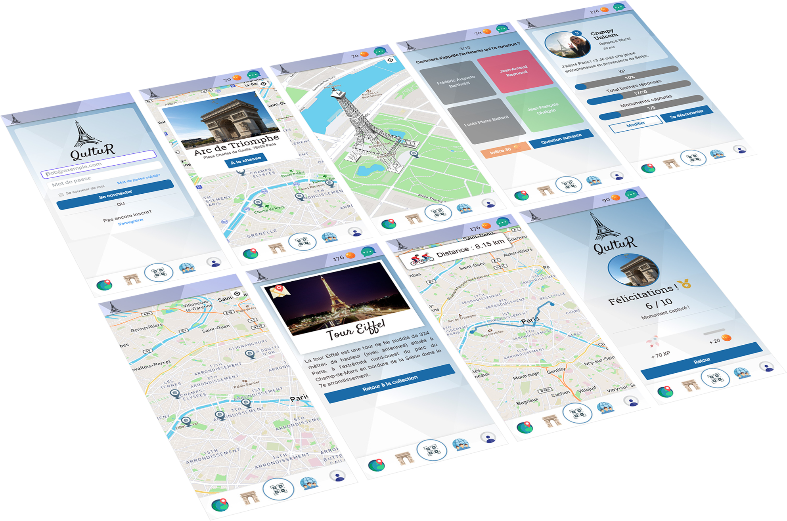

Développeur web fullstack - Le Wagon à Bordeaux
Projet de fin d'études
Ce projet consiste en la réalisation d'une application Ruby on Rails  qui permet à chaque utilisateur de visiter les monuments d'une ville de façon ludique.
qui permet à chaque utilisateur de visiter les monuments d'une ville de façon ludique.
QultuR, tentez de capturer vos monuments préférés
https://www.qultur.xyz/

L'objectif de cette application mobile est de retrouver tous les monuments célèbres autour de nous et de les capturer.
Fonctionnalités
- Authentification des utilisateurs
- Géolocalisation et itinéraire avec l'API MapBox
- Base de données des utilisateurs et des monuments (statistiques des utilisateurs, photo, description du monument, quiz, etc...)
- Monuments visibles en 3D sur la carte
- Gamification du système de capture des monuments (10 questions par monument, gain de points d'expérience et de pièces)
- Scan de QRcode au pied du monument pour débloquer l'accès au quiz
- Le quiz consiste en un QCM, 30 pièces peuvent être dépensées pour obtenir un indice
- Service de chat interne
Outils
- Figma Prototypage, mock-up
- Trello Collaboration et organisation des tâches
- Ruby on Rails et le langage Ruby Back-end
- HTML/CSS, JavaScript ES6 Front-end
- git/GitHub versioning et collaboration
- MapBox API Intégration d'une carte (géolocalisation / itinéraire)
- Heroku Hébergement de l'application
- PostgreSQL Gestion de la base de données
- Cloudinary Hébergement des images